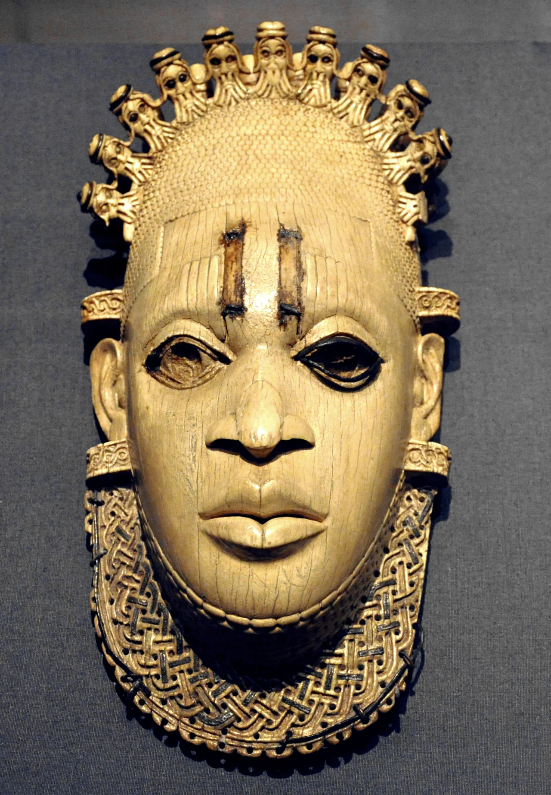
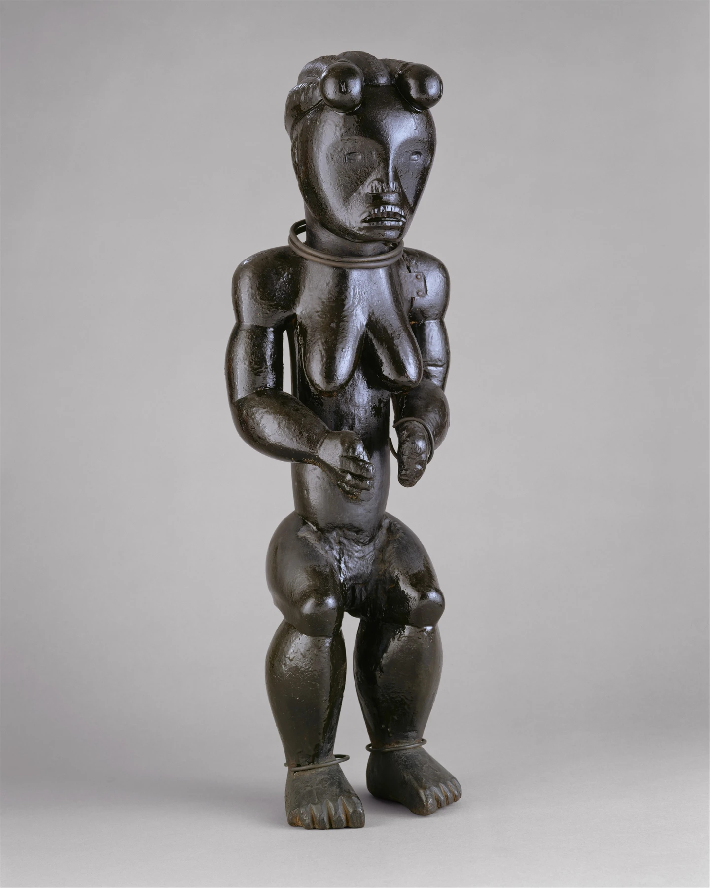

見るポイント
額の黒い線を二本見つけてから、上に並ぶ小さな顔と、あごの下の透かし模様へ目を移してください。中央のなめらかな顔を、細かい彫りが上下から囲んでいます。
作品・制作の例5件を紹介しています。図版で紹介する作品は2作品。実作品図版2点、AAGA模写（Runway制作）0点。
思想・文化運動と美術の関係を考える主題
Négritude と視覚文化
自分たちの文化を、他人の物差しだけで評価されてよいのでしょうか。ネグリチュードは、植民地支配や人種差別に対して、黒人の文化や経験の価値を自分たちで語ろうとした運動です。まず詩や言葉の運動として育ち、美術や文化政策にも関わりました。
図版で紹介する作品は2作品。実作品図版2点、AAGA模写（Runway制作）0点。
実作品を見る

画像を表示できませんでした。下の出典ページで確認できます。
ベニン王国、エドの彫刻家（個人名不詳） / 16世紀
象牙に鉄と銅合金の象嵌。制作地はベニン・シティ（現在のナイジェリア）。 ／ 大英博物館、所蔵番号Af1910,0513.1
額の黒い線を二本見つけてから、上に並ぶ小さな顔と、あごの下の透かし模様へ目を移してください。中央のなめらかな顔を、細かい彫りが上下から囲んでいます。
王の儀礼で腰に下げるためにつくられた象牙彫刻です。
1897年の英国のベニン侵攻で王宮から持ち去られました。
ナイジェリア政府は1966年、ダカール芸術祭にあわせた冊子『Nigeria Today』特別号の表紙に、この仮面の写真を載せました。
掲載図版は彫刻の現物を2011年に撮影した写真です。
撮影 Andreas Praefcke（2011年）、Wikimedia Commons。原作は大英博物館（Af1910,0513.1）。
出典で作品・資料を見る ↗撮影者が写真をパブリックドメインに提供しています。その扱いができない場合にも、法律上必須の条件を除き、用途を問わず使えると明記しています。
16世紀制作の彫刻。原作の著作権保護期間は満了しています。
撮影者が公開した2011年の原版を使用。写真の自己権利放棄と代替許諾は出典先に記載。
ダカールでの接点は冊子表紙への採用です。原作は芸術祭の会場に展示されませんでした。
出典先の原画像を開く ↗作品・図版の関連資料 ↗画像の利用条件 ↗撮影者が投稿した原版を切り抜かずに縮小し、WebPへ変換しました。
実作品を見る

画像を表示できませんでした。下の出典ページで確認できます。
オカク・ファンの彫刻家（個人名不詳） / 19世紀
木、銅合金、ヤシ油。ガボンまたは赤道ギニア。 ／ メトロポリタン美術館、所蔵番号1978.412.441
頭の丸みから、肩とひじ、軽く曲がった膝へと目を移してみてください。丸みを帯びた部分が続きます。木の黒い表面のうち、光を受けたところを見ると、腕や膝の曲がりがくっきりします。
祖先の大切な遺物を納めた容器の上に据えた像です。1966年、セネガルの首都ダカールで、サンゴール大統領が主導した第1回世界黒人芸術祭の展覧会に実際に出品されました。はじめの用途と、独立後の展覧会で果たした役割の両方をたどれます。
図版・メトロポリタン美術館 Open Access（撮影者の個人名は所蔵館の作品ページに記載なし）。マイケル・C・ロックフェラー記念コレクション、ネルソン・A・ロックフェラー寄贈（1965年）。
出典で作品・資料を見る ↗メトロポリタン美術館の作品ページでPublic Domainと表示。図版は同館のOpen Access（CC0）。
所蔵館の作品ページにPublic Domainの表示があります。
所蔵館のOpen Accessで公開された図版を使用しています。
出典先の原画像を開く ↗作品・図版の関連資料 ↗画像の利用条件 ↗元画像を切り抜かずに縮小し、WebPに変換しています。
象牙に鉄と銅合金の象嵌。制作地はベニン・シティ（現在のナイジェリア）。
額の黒い線を二本見つけてから、上に並ぶ小さな顔と、あごの下の透かし模様へ目を移してください。中央のなめらかな顔を、細かい彫りが上下から囲んでいます。
作品・資料の出典を見る ↗原題：Mask (pendant), British Museum Af1910,0513.1
ベニン王国、エドの彫刻家（個人名不詳） / 16世紀 / 象牙に鉄と銅合金の象嵌。制作地はベニン・シティ（現在のナイジェリア）。
木、銅合金、ヤシ油。ガボンまたは赤道ギニア。
頭の丸みから、肩とひじ、軽く曲がった膝へと目を移してみてください。丸みを帯びた部分が続きます。木の黒い表面のうち、光を受けたところを見ると、腕や膝の曲がりがくっきりします。
作品・資料の出典を見る ↗原題：Eyema byeri (reliquary guardian figure)
オカク・ファンの彫刻家（個人名不詳） / 19世紀 / 木、銅合金、ヤシ油。ガボンまたは赤道ギニア。
紙に木炭
馬と人の姿を木炭で描いた作品です。独立後のセネガルで、新しい美術教育を担った画家の造形を知る入口になります。
作品・資料の出典を見る ↗作品名（出典表記）：騎手（Horseman）
パパ・イブラ・タル / 1965年 / 紙に木炭
スミソニアン所蔵2008-5-1、65.2×49.2cmの個体。
綿・羊毛などのタペストリー
絵の図案が大きな織物となり、外交の贈り物にもなった例です。文化が国外へ伝わる仕組みも考えられます。
作品・資料の出典を見る ↗作品名（出典表記）：魔法の手をもつ詩人（Poete aux Mains Magiques）
パパ・イブラ・タル（図案）／タバール兄弟姉妹工房（織り） / 1969年 / 綿・羊毛などのタペストリー
1964年の委嘱、1969年頃の贈呈と作品の年を区別。所蔵番号84-7-1。
綿の縦糸・羊毛の横糸など
人物と星を織物に広げた作品です。思想を、そのまま文字で説明するのではない表し方として考えます。
作品・資料の出典を見る ↗作品名（出典表記）：星をまく人（La semeuse d’étoiles）第5／8版
パパ・イブラ・タル / 1970年代初め / 綿の縦糸・羊毛の横糸など
メトロポリタン美術館2025.119、261×263cm。別の版と混同しません。
エメ・セゼール、レオポルド・セダール・サンゴール、レオン＝ゴントラン・ダマスらが重要な役割を担いました。
セネガルでは、独立後の美術教育や、1966年にダカールで開かれた世界黒人芸術祭とも結びつきます。
ただし、アフリカの作家全員が同じ考え方を共有したわけではありません。
パパ・イブラ・タルの織物では、線と色が人物の周囲へ広がります。これをアフリカ全体の共通配色とは考えません。
詩の言葉と、美術の題名を並べて読むと、文化を自分で語ることへの関心が見えます。共通の書体はありません。
《騎手》では、人と馬の姿をどう組み合わせるかを見ます。写実的に描くことだけが、文化を表す方法ではありません。
大きな織物は、糸を織る人々との共同の仕事でもあります。下絵の作者と、織った工房を分けて確かめます。
ネグリチュードは、一つの美術様式の名前ではありません。ダカール派という美術の流れとも関わりますが、思想、教育制度、個々の作品を同じものにしません。
自分の文化を大切にするとき、誰の声を代表しているのでしょうか。一人の作品から地域全体を決めつけないことも、作品を見る大切な姿勢です。
セネガルのパパ・イブラ・タルの3作品と、1966年のダカール展に出品された木彫を紹介します。タルの作品から独立後の制作を、木彫から展覧会がアフリカの美術をどう紹介したかを考えます。
作品・制作の例5件を紹介しています。図版で紹介する作品は2作品。実作品図版2点、AAGA模写（Runway制作）0点。